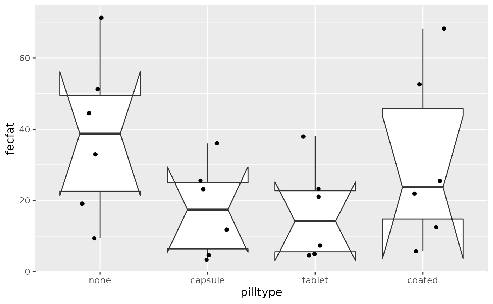
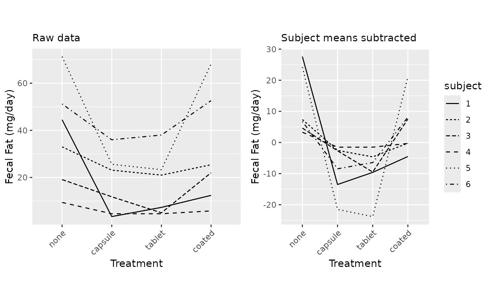

vignettes/session_lab.Rmd
session_lab.RmdLearning objectives
pivot_wider to create a wide-format dataframeExercises
library(ggplot2)
ggplot(dat, aes(x = pilltype, y = fecfat)) +
geom_boxplot(notch = TRUE, outlier.shape = NA) +
geom_jitter(width = 0.2, alpha = 0.5) +
theme_grey(base_size = 12) +
theme(legend.position = "none")## Notch went outside hinges
## ℹ Do you want `notch = FALSE`?
## Notch went outside hinges
## ℹ Do you want `notch = FALSE`?
## Notch went outside hinges
## ℹ Do you want `notch = FALSE`?
## Notch went outside hinges
## ℹ Do you want `notch = FALSE`?
If the observations are independent (ie assumptions of a one-way AOV are met), notches can be used to visually perform a pairwise hypothesis test for difference of medians.
It’s wrong here because these are grouped / hierarchical data, and observations are not independent.
p1 <- ggplot(dat, aes(x = pilltype, y = fecfat, group = subject, lty = subject)) +
geom_line() +
labs(subtitle = "Raw data") +
theme(axis.text.x = element_text(angle = 45, vjust = 1, hjust=1)) +
xlab("Treatment") + ylab("Fecal Fat (mg/day)") +
theme(legend.position = "none")
p2 <- ggplot(dat, aes(x = pilltype, y = fecfatminusmean, group = subject, lty = subject)) +
geom_line() +
labs(subtitle = "Subject means subtracted") +
theme(axis.text.x = element_text(angle = 45, vjust = 1, hjust=1)) +
xlab("Treatment") + ylab("Fecal Fat (mg/day)")
library(gridExtra)##
## Attaching package: 'gridExtra'## The following object is masked from 'package:dplyr':
##
## combine
grid.arrange(p1, p2, ncol=2, respect=TRUE)
library(tidyr)
dat %>%
select(-starts_with("fecfatminus")) %>%
pivot_wider(names_from =pilltype, values_from = fecfat) %>%
select(-subject)## # A tibble: 6 × 4
## none tablet capsule coated
## <dbl> <dbl> <dbl> <dbl>
## 1 44.5 7.30 3.40 12.4
## 2 33 21 23.1 25.4
## 3 19.1 5 11.8 22
## 4 9.40 4.60 4.60 5.80
## 5 71.3 23.3 25.6 68.2
## 6 51.2 38 36 52.6
ICCfun <- function(x) {
fit2way <- lm(fecfat ~ subject + pilltype, data = x)
subjvar_uncorrected <- x %>% group_by(subject) %>%
summarize(MEAN = mean(fecfat), .groups = "drop") %>%
pull(MEAN) %>%
var()
correction <- sum(residuals(fit2way) ^ 2) / 15 / 4
subjvar <- subjvar_uncorrected - correction
residualvar <- sum(residuals(fit2way) ^ 2) / 15
ICC <- subjvar / (subjvar + residualvar)
output <- c(subjvar, residualvar, ICC)
names(output) <- c("subjectvar", "residualvar", "ICC")
return(output)
}
ICCfun(dat)## subjectvar residualvar ICC
## 252.6692760 106.9988878 0.7025066
ICCfun(dat)## subjectvar residualvar ICC
## 252.6692760 106.9988878 0.7025066
ICCfun(datrand)## subjectvar residualvar ICC
## 62.8746156 296.7935482 0.1748128